Candidate List 20260320 Previous Day Next Day Section 1: New Sources (age<1d) Cosmological Afterglow
Section 2: Old (1-5d) sources observed last night placeholder
Section 1: New Afterglow/FBOT Cands Last Night (9)
1. ZTF26aanjfxu (Afterglow?) [Back to Top] [Share] [Trigger Swift] [Fritz ] [Lasair ]RA, Dec: 119.52836, 33.22408 7h58m6.81s, 33d13m26.70sGalactic (l, b): 187.66628, 27.60636 ext(g-r) = 0.065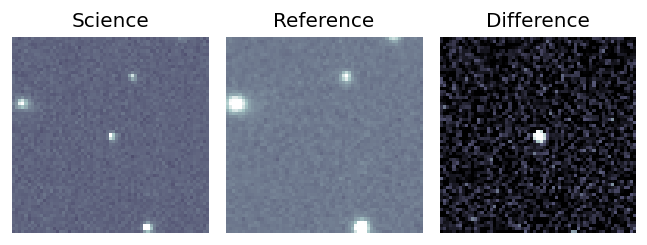
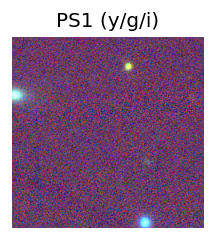
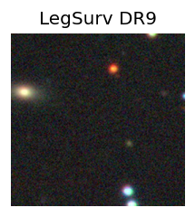
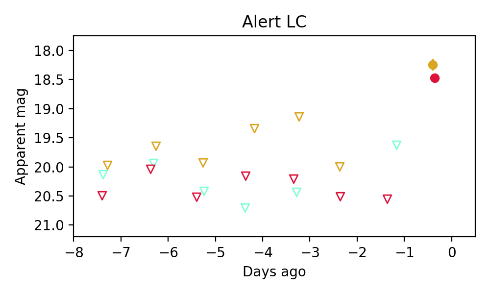
Consistent with synchrotron, g-r>0!
2. ZTF26aankjkj (Afterglow?) [Back to Top] [Share] [Trigger Swift] [Fritz ] [Lasair ]RA, Dec: 101.24634, 13.14241 6h44m59.12s, 13d 8m32.68sGalactic (l, b): 200.48489, 4.5472 ext(g-r) = 0.332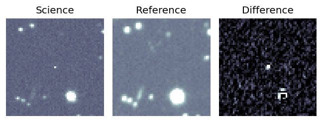
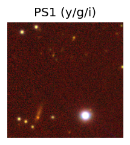
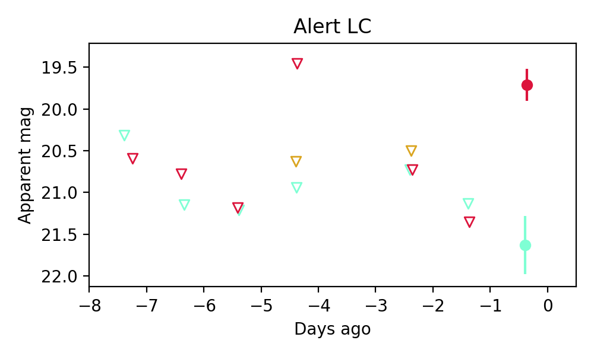
Consistent with synchrotron, g-r>0!
3. ZTF26aankmpc (Afterglow?) [Back to Top] [Share] [Trigger Swift] [Fritz ] [Lasair ]RA, Dec: 96.17443, 10.18877 6h24m41.86s, 10d11m19.56sGalactic (l, b): 200.82576, -1.22114 ext(g-r) = 0.698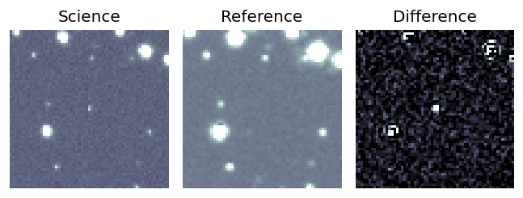
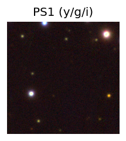
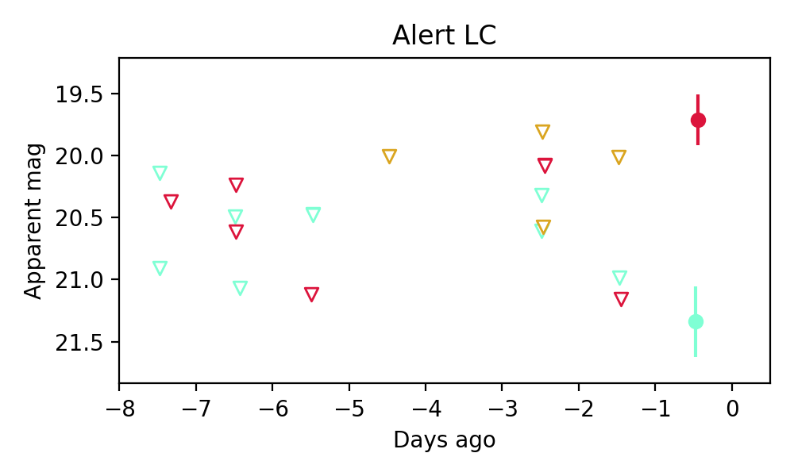
Consistent with synchrotron, g-r>0!
4. ZTF26aankrgj (Afterglow?) [Back to Top] [Share] [Trigger Swift] [Fritz ] [Lasair ]RA, Dec: 80.8272, 28.59731 5h23m18.53s, 28d35m50.33sGalactic (l, b): 177.63594, -4.29399 ext(g-r) = 0.604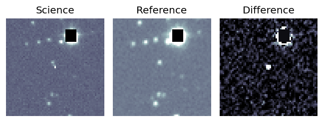
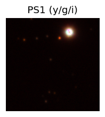
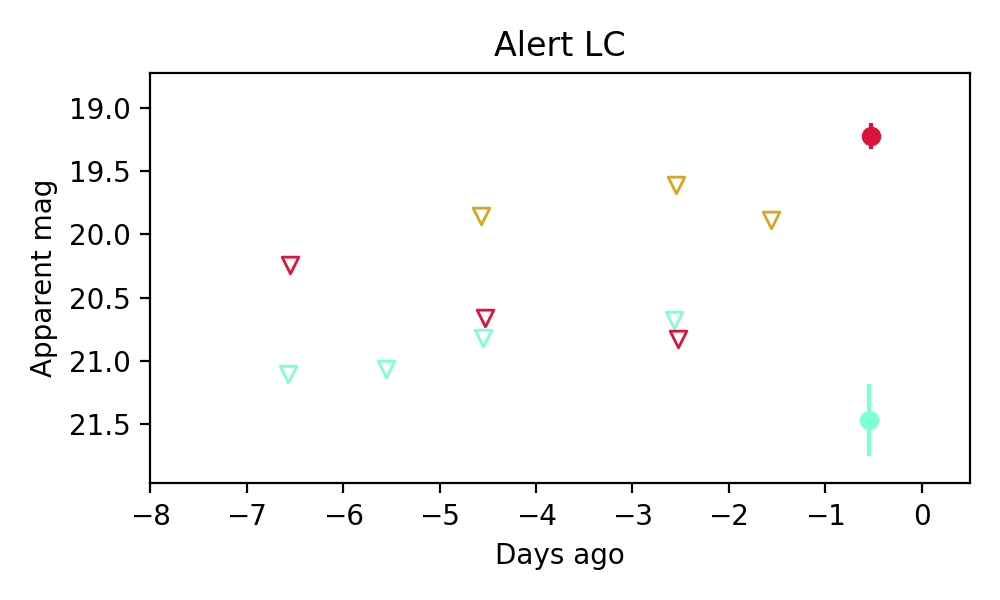
Consistent with synchrotron, g-r>0!
5. ZTF26aanmtng (Afterglow?) [Back to Top] [Share] [Trigger Swift] [Fritz ] [Lasair ]RA, Dec: 107.17095, 23.00315 7h 8m41.03s, 23d 0m11.34sGalactic (l, b): 193.92155, 13.87342 WARNING: 0.5 deg from ecliptic plane ext(g-r) = 0.061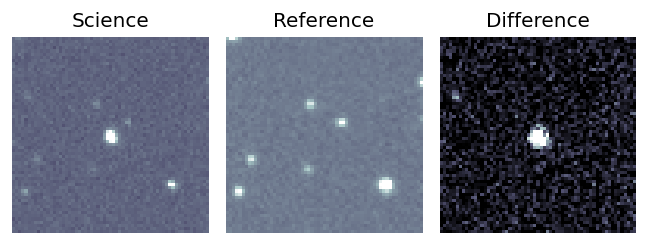
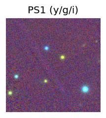
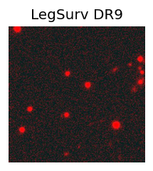
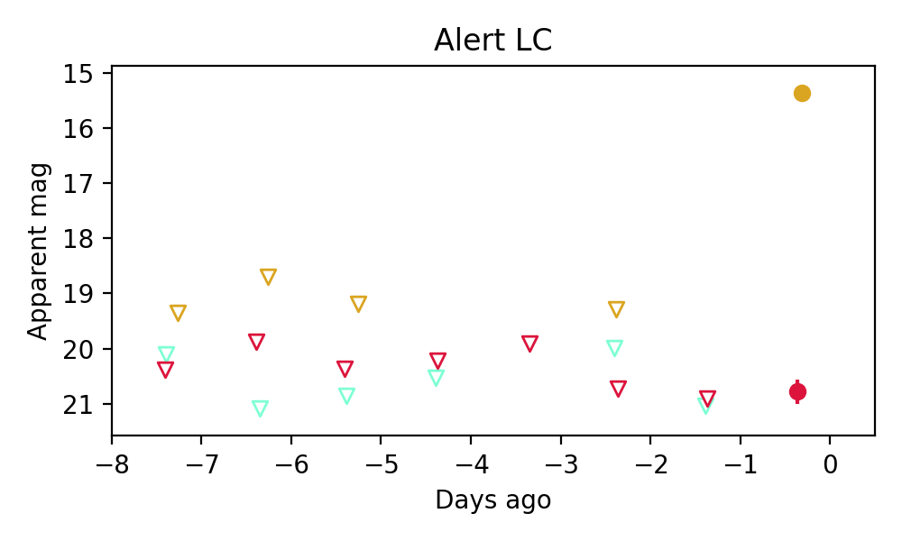
Consistent with synchrotron, g-r>0!
6. ZTF26aanoidy (Afterglow?) [Back to Top] [Share] [Trigger Swift] [Fritz ] [Lasair ]RA, Dec: 146.37079, 3.79152 9h45m28.99s, 3d47m29.47sGalactic (l, b): 232.30145, 39.9087 ext(g-r) = 0.047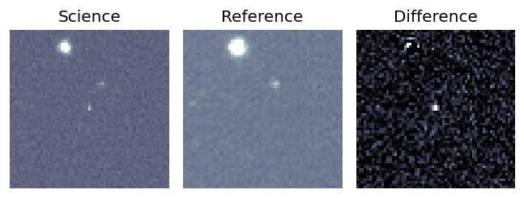
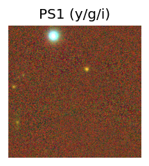
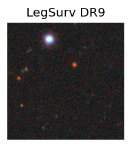
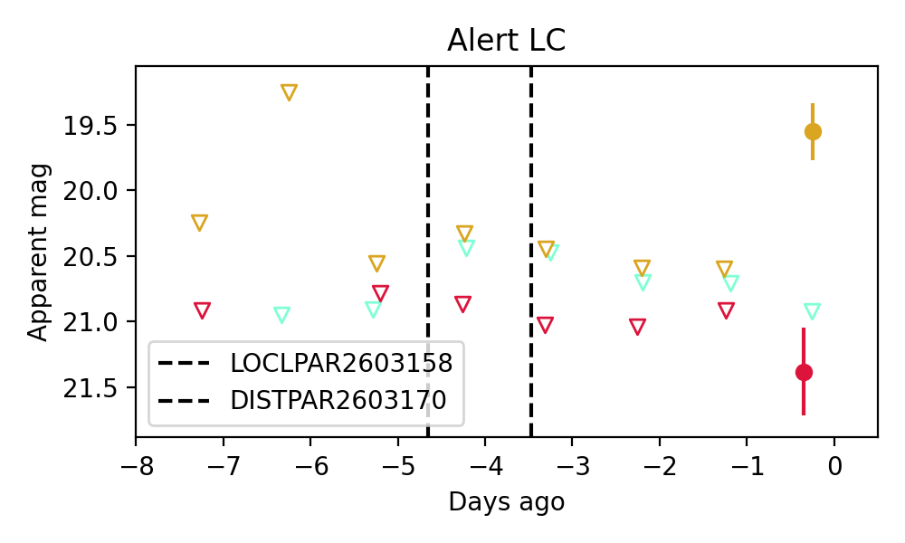
Consistent with synchrotron, g-r>0!
7. ZTF26aanqdva (Afterglow?) [Back to Top] [Share] [Trigger Swift] [Fritz ] [Lasair ]RA, Dec: 137.84475, 18.21208 9h11m22.74s, 18d12m43.49sGalactic (l, b): 210.73882, 38.8466 WARNING: 1.9 deg from ecliptic plane ext(g-r) = 0.03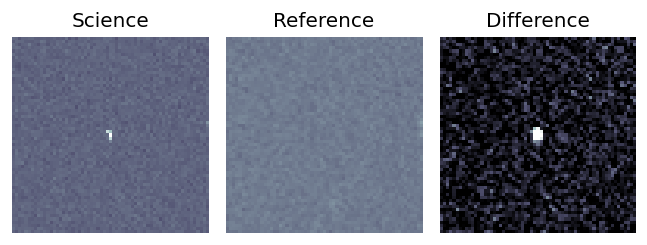
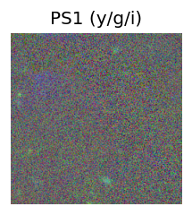
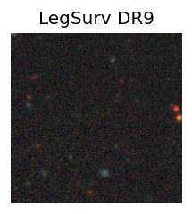
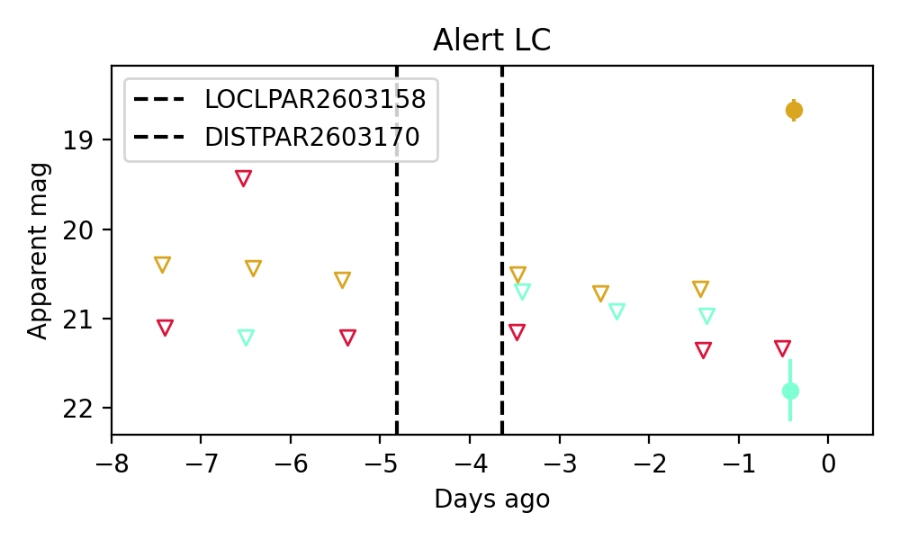
Consistent with synchrotron, g-r>0!
8. ZTF26aanqytv (Afterglow?) [Back to Top] [Share] [Trigger Swift] [Fritz ] [Lasair ]RA, Dec: 183.92993, 36.32041 12h15m43.18s, 36d19m13.47sGalactic (l, b): 160.22691, 78.08837 ext(g-r) = 0.023LegacySurvey: 1 sources in 3 arcsec Closest: d = 6.87 arcsec, 46.7 deg (east of north) photoz=0.0 (68% bounds 0.0, 0.04), type=PSF peak abs mag = -10.78 (68% bounds -10.02, -16.27)
9. ZTF26aansxjk (FBOT?) [Back to Top] [Share] [Trigger Swift] [Fritz ] [Lasair ]RA, Dec: 182.7643, 42.04388 12h11m3.43s, 42d 2m37.96sGalactic (l, b): 149.29626, 72.9547 ext(g-r) = 0.015peak abs mag = -19.48 LegacySurvey: 1 sources in 3 arcsec Closest: d = 0.63 arcsec, 273.1 deg (east of north) photoz=0.17 (68% bounds 0.1, 0.29), type=EXP peak abs mag = -19.57 (68% bounds -18.18, -20.82)
Section 2: Older Sources Observed Last Night (49)
0. ZTF26aaktvhd (FBOT?) [Back to Top] [Share] [Trigger Swift] [Fritz ] [Lasair ]RA, Dec: 56.98331, -5.76567 3h47m55.99s, -5d-45m-56.41sGalactic (l, b): 194.0988, -42.95646 ext(g-r) = 0.081peak abs mag = -20.42 LegacySurvey: 1 sources in 3 arcsec Closest: d = 1.24 arcsec, 143.8 deg (east of north) photoz=0.1 (68% bounds 0.07, 0.12), type=SER peak abs mag = -19.51 (68% bounds -18.76, -20.01)
1. ZTF26aalcryr (Afterglow?) [Back to Top] [Share] [Trigger Swift] [Fritz ] [Lasair ]RA, Dec: 138.93992, 38.98624 9h15m45.58s, 38d59m10.47sGalactic (l, b): 183.72526, 43.96997 ext(g-r) = 0.017LegacySurvey: 1 sources in 3 arcsec Closest: d = 5.78 arcsec, 223.8 deg (east of north) photoz=0.01 (68% bounds 0.01, 0.03), type=PSF peak abs mag = -14.57 (68% bounds -13.4, -16.65) Consistent with synchrotron, g-r>0!
2. ZTF26aalqabk (FBOT?) [Back to Top] [Share] [Trigger Swift] [Fritz ] [Lasair ]RA, Dec: 152.03154, 17.79744 10h 8m7.57s, 17d47m50.79sGalactic (l, b): 218.11738, 51.31346 ext(g-r) = 0.04LegacySurvey: 1 sources in 3 arcsec Closest: d = 0.33 arcsec, 208.2 deg (east of north) photoz=0.23 (68% bounds 0.11, 0.49), type=REX peak abs mag = -20.72 (68% bounds -18.99, -22.62)
3. ZTF26aaltcet (FBOT?) [Back to Top] [Share] [Trigger Swift] [Fritz ] [Lasair ]RA, Dec: 242.68485, 10.29906 16h10m44.36s, 10d17m56.60sGalactic (l, b): 23.09836, 40.27233 ext(g-r) = 0.056peak abs mag = -20.11 LegacySurvey: 1 sources in 3 arcsec Closest: d = 0.79 arcsec, 92.6 deg (east of north) photoz=0.11 (68% bounds 0.08, 0.14), type=SER peak abs mag = -19.39 (68% bounds -18.55, -19.88) Consistent with synchrotron, g-r>0!
4. ZTF26aaltsvo (Afterglow?FBOT?) [Back to Top] [Share] [Trigger Swift] [Fritz ] [Lasair ]RA, Dec: 215.4933, 36.2721 14h21m58.39s, 36d16m19.55sGalactic (l, b): 64.04047, 68.75368 ext(g-r) = 0.01peak abs mag = -20.07 LegacySurvey: 1 sources in 3 arcsec Closest: d = 0.88 arcsec, 256.9 deg (east of north) photoz=0.09 (68% bounds 0.09, 0.1), type=SER peak abs mag = -19.91 (68% bounds -19.7, -20.06) Consistent with synchrotron, g-r>0!
5. ZTF26aalvaov (Afterglow?) [Back to Top] [Share] [Trigger Swift] [Fritz ] [Lasair ]RA, Dec: 60.3436, 15.06657 4h 1m22.46s, 15d 3m59.64sGalactic (l, b): 176.3159, -27.53207 ext(g-r) = 0.379
6. ZTF26aalzjyx (FBOT?) [Back to Top] [Share] [Trigger Swift] [Fritz ] [Lasair ]RA, Dec: 201.06737, 22.09371 13h24m16.17s, 22d 5m37.37sGalactic (l, b): 0.69287, 81.0024 ext(g-r) = 0.022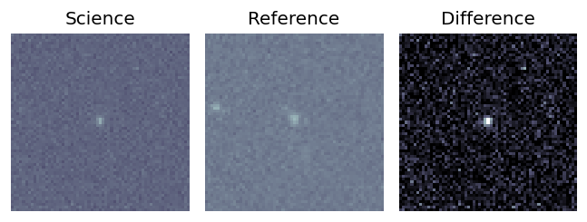
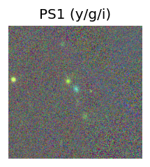
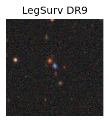
peak abs mag = -20.71 LegacySurvey: 1 sources in 3 arcsec Closest: d = 0.84 arcsec, 347.3 deg (east of north) photoz=0.1 (68% bounds 0.08, 0.11), type=EXP peak abs mag = -19.36 (68% bounds -18.86, -19.68) 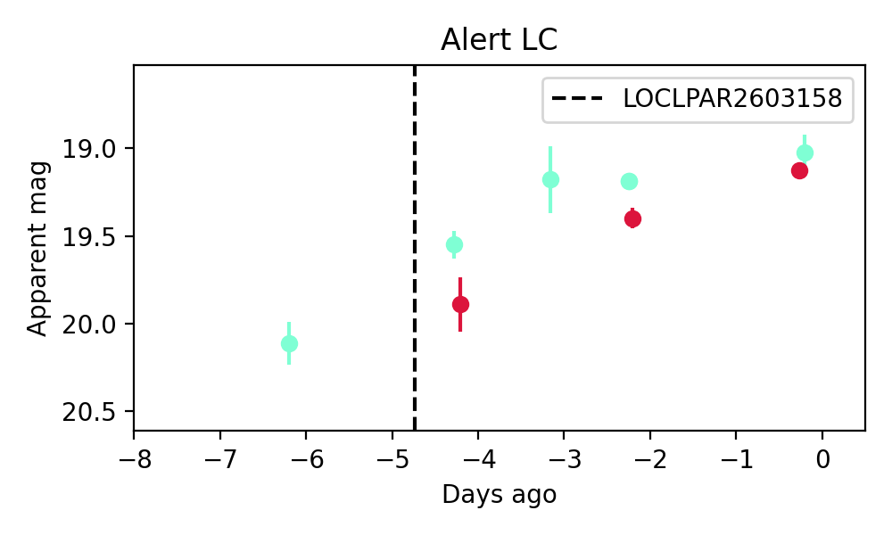
7. ZTF26aamdjai (Afterglow?) [Back to Top] [Share] [Trigger Swift] [Fritz ] [Lasair ]RA, Dec: 145.47862, -13.32794 9h41m54.87s, -13d-19m-40.60sGalactic (l, b): 248.15788, 28.7693 ext(g-r) = 0.058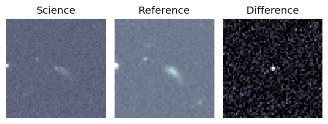
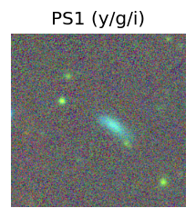
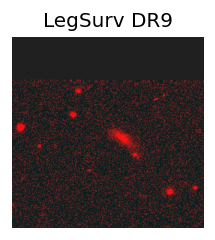
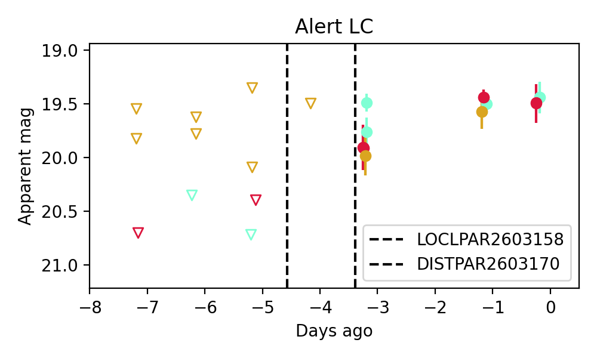
Consistent with synchrotron, g-r>0!
8. ZTF26aamfpth (Afterglow?) [Back to Top] [Share] [Trigger Swift] [Fritz ] [Lasair ]RA, Dec: 148.97113, 44.01399 9h55m53.07s, 44d 0m50.36sGalactic (l, b): 175.46866, 51.08823 ext(g-r) = 0.015peak abs mag = -17.80 LegacySurvey: 1 sources in 3 arcsec Closest: d = 3.50 arcsec, 106.4 deg (east of north) photoz=0.07 (68% bounds 0.07, 0.08), type=SER peak abs mag = -17.76 (68% bounds -17.57, -17.94) Consistent with synchrotron, g-r>0!
9. ZTF26aamfxlb (FBOT?) [Back to Top] [Share] [Trigger Swift] [Fritz ] [Lasair ]RA, Dec: 118.88026, 51.93478 7h55m31.26s, 51d56m5.20sGalactic (l, b): 166.49511, 30.69327 ext(g-r) = 0.058peak abs mag = -19.18 LegacySurvey: 1 sources in 3 arcsec Closest: d = 1.32 arcsec, 261.7 deg (east of north) photoz=0.2 (68% bounds 0.13, 0.28), type=SER peak abs mag = -20.58 (68% bounds -19.56, -21.39) Consistent with synchrotron, g-r>0!
10. ZTF26aamgppk (Afterglow?) [Back to Top] [Share] [Trigger Swift] [Fritz ] [Lasair ]RA, Dec: 201.80347, 71.94546 13h27m12.83s, 71d56m43.66sGalactic (l, b): 119.03076, 44.91081 ext(g-r) = 0.019LegacySurvey: 1 sources in 3 arcsec Closest: d = 2.07 arcsec, 39.0 deg (east of north) photoz=0.03 (68% bounds 0.03, 0.04), type=SER peak abs mag = -16.65 (68% bounds -16.22, -17.2) Consistent with synchrotron, g-r>0!
11. ZTF26aamitpu (Afterglow?) [Back to Top] [Share] [Trigger Swift] [Fritz ] [Lasair ]RA, Dec: 212.99223, 55.40955 14h11m58.14s, 55d24m34.38sGalactic (l, b): 101.17538, 58.18557 ext(g-r) = 0.017peak abs mag = -18.75 LegacySurvey: 1 sources in 3 arcsec Closest: d = 1.18 arcsec, 307.0 deg (east of north) photoz=0.04 (68% bounds 0.04, 0.04), type=SER peak abs mag = -18.3 (68% bounds -18.12, -18.52) Consistent with synchrotron, g-r>0!
12. ZTF26aamqibe (FBOT?) [Back to Top] [Share] [Trigger Swift] [Fritz ] [Lasair ]RA, Dec: 170.82966, 34.37731 11h23m19.12s, 34d22m38.33sGalactic (l, b): 186.53409, 69.78081 ext(g-r) = 0.026peak abs mag = -19.32 LegacySurvey: 1 sources in 3 arcsec Closest: d = 0.86 arcsec, 53.7 deg (east of north) photoz=0.89 (68% bounds 0.58, 1.15), type=REX peak abs mag = -25.06 (68% bounds -23.94, -25.75)
13. ZTF26aamqluf (Afterglow?) [Back to Top] [Share] [Trigger Swift] [Fritz ] [Lasair ]RA, Dec: 183.74219, 63.7879 12h14m58.13s, 63d47m16.42sGalactic (l, b): 129.58969, 52.86639 ext(g-r) = 0.022peak abs mag = -18.73 LegacySurvey: 1 sources in 3 arcsec Closest: d = 5.62 arcsec, 141.9 deg (east of north) photoz=0.02 (68% bounds 0.01, 0.05), type=PSF peak abs mag = -18.64 (68% bounds -16.17, -20.67) Consistent with synchrotron, g-r>0!
14. ZTF26aamsxxm (Afterglow?) [Back to Top] [Share] [Trigger Swift] [Fritz ] [Lasair ]RA, Dec: 157.30472, 8.49369 10h29m13.13s, 8d29m37.29sGalactic (l, b): 235.19634, 51.57907 WARNING: -0.93 deg from ecliptic plane ext(g-r) = 0.037peak abs mag = -18.24 LegacySurvey: 1 sources in 3 arcsec Closest: d = 0.36 arcsec, 145.7 deg (east of north) photoz=0.11 (68% bounds 0.08, 0.13), type=SER peak abs mag = -18.44 (68% bounds -17.89, -18.95)
15. ZTF26aamusdq (FBOT?) [Back to Top] [Share] [Trigger Swift] [Fritz ] [Lasair ]RA, Dec: 249.16866, 12.00404 16h36m40.48s, 12d 0m14.54sGalactic (l, b): 28.55392, 35.29081 ext(g-r) = 0.076peak abs mag = -19.95 LegacySurvey: 1 sources in 3 arcsec Closest: d = 1.57 arcsec, 309.8 deg (east of north) photoz=0.1 (68% bounds 0.09, 0.12), type=SER peak abs mag = -18.65 (68% bounds -18.28, -19.02)
16. ZTF26aamuuhn (Afterglow?) [Back to Top] [Share] [Trigger Swift] [Fritz ] [Lasair ]RA, Dec: 231.04141, 26.66175 15h24m9.94s, 26d39m42.31sGalactic (l, b): 41.07453, 56.07838 ext(g-r) = 0.035peak abs mag = -18.69 LegacySurvey: 1 sources in 3 arcsec Closest: d = 0.57 arcsec, 328.8 deg (east of north) photoz=0.06 (68% bounds 0.04, 0.08), type=SER peak abs mag = -17.64 (68% bounds -16.88, -18.43) Consistent with synchrotron, g-r>0!
17. ZTF26aamwsha (Afterglow?) [Back to Top] [Share] [Trigger Swift] [Fritz ] [Lasair ]RA, Dec: 288.4845, -5.67158 19h13m56.28s, -5d-40m-17.70sGalactic (l, b): 30.41803, -7.5777 ext(g-r) = 0.561
18. ZTF26aamxwlx (FBOT?) [Back to Top] [Share] [Trigger Swift] [Fritz ] [Lasair ]RA, Dec: 123.01373, 16.04696 8h12m3.30s, 16d 2m49.06sGalactic (l, b): 206.9191, 24.88141 WARNING: -3.84 deg from ecliptic plane ext(g-r) = 0.046peak abs mag = -19.59 LegacySurvey: 1 sources in 3 arcsec Closest: d = 1.13 arcsec, 303.1 deg (east of north) photoz=0.11 (68% bounds 0.09, 0.13), type=SER peak abs mag = -18.98 (68% bounds -18.58, -19.28) Consistent with synchrotron, g-r>0!
19. ZTF26aamxxpn (Afterglow?) [Back to Top] [Share] [Trigger Swift] [Fritz ] [Lasair ]RA, Dec: 89.28025, 53.66809 5h57m7.26s, 53d40m5.12sGalactic (l, b): 159.35752, 14.09551 ext(g-r) = 0.19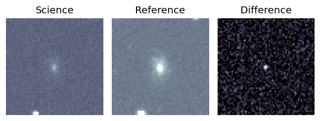
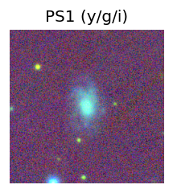
PS1: 1 source in 3 arcsec Closest: d = 0.40 arcsec photoz=0.07+/-0.01 peak abs mag = -18.19 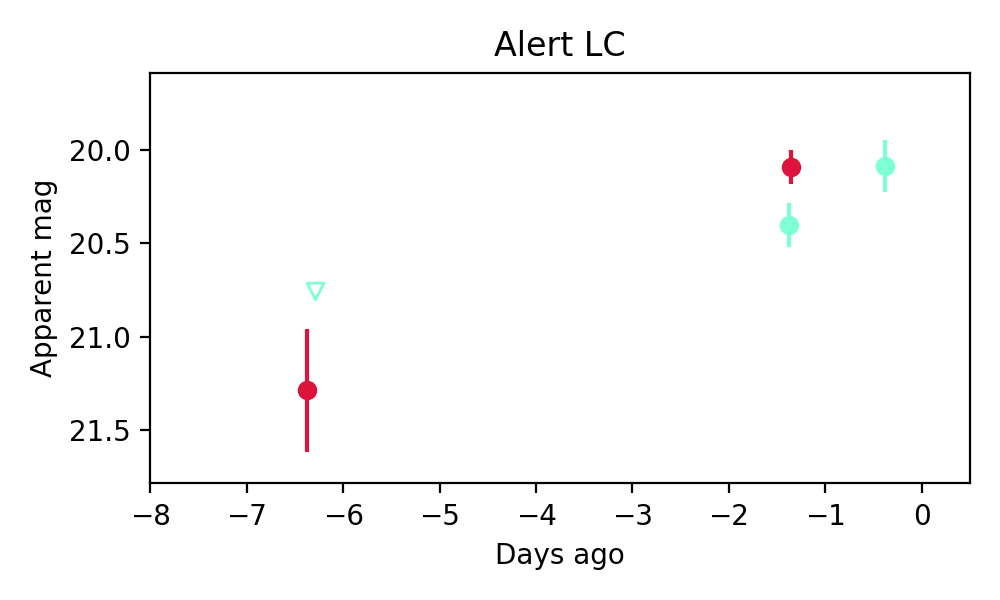
Consistent with synchrotron, g-r>0!
20. ZTF26aamytns (FBOT?) [Back to Top] [Share] [Trigger Swift] [Fritz ] [Lasair ]RA, Dec: 97.22907, 25.50122 6h28m54.98s, 25d30m4.40sGalactic (l, b): 187.68627, 6.74808 WARNING: 2.23 deg from ecliptic plane ext(g-r) = 0.408peak abs mag = -18.27 PS1: 1 source in 3 arcsec Closest: d = 1.81 arcsec photoz=0.25+/-0.11 peak abs mag = -21.25
21. ZTF26aancbfs (FBOT?) [Back to Top] [Share] [Trigger Swift] [Fritz ] [Lasair ]RA, Dec: 161.85319, 23.38396 10h47m24.76s, 23d23m2.26sGalactic (l, b): 213.59837, 61.78027 ext(g-r) = 0.046peak abs mag = -19.92 LegacySurvey: 1 sources in 3 arcsec Closest: d = 2.66 arcsec, 331.1 deg (east of north) photoz=0.16 (68% bounds 0.14, 0.18), type=SER peak abs mag = -19.56 (68% bounds -19.23, -19.84) Consistent with synchrotron, g-r>0!
22. ZTF26aaneaps (Afterglow?FBOT?) [Back to Top] [Share] [Trigger Swift] [Fritz ] [Lasair ]RA, Dec: 152.46729, 22.9509 10h 9m52.15s, 22d57m3.23sGalactic (l, b): 210.31763, 53.32035 ext(g-r) = 0.028peak abs mag = -17.50 LegacySurvey: 1 sources in 3 arcsec Closest: d = 0.56 arcsec, 225.1 deg (east of north) photoz=0.5 (68% bounds 0.31, 0.85), type=PSF peak abs mag = -22.72 (68% bounds -21.52, -24.12) Consistent with synchrotron, g-r>0!
23. ZTF26aanedeb (Afterglow?) [Back to Top] [Share] [Trigger Swift] [Fritz ] [Lasair ]RA, Dec: 152.3526, 48.28493 10h 9m24.62s, 48d17m5.76sGalactic (l, b): 167.8379, 52.24704 ext(g-r) = 0.007peak abs mag = -18.85 LegacySurvey: 1 sources in 3 arcsec Closest: d = 0.73 arcsec, 213.1 deg (east of north) photoz=0.07 (68% bounds 0.06, 0.09), type=SER peak abs mag = -18.15 (68% bounds -17.61, -18.55)
24. ZTF26aaneggi (Afterglow?) [Back to Top] [Share] [Trigger Swift] [Fritz ] [Lasair ]RA, Dec: 146.70152, -2.02704 9h46m48.36s, -2d-1m-37.35sGalactic (l, b): 238.64688, 36.86674 ext(g-r) = 0.059peak abs mag = -18.92 LegacySurvey: 1 sources in 3 arcsec Closest: d = 1.41 arcsec, 299.1 deg (east of north) photoz=0.1 (68% bounds 0.08, 0.11), type=SER peak abs mag = -18.72 (68% bounds -18.19, -19.02) Consistent with synchrotron, g-r>0!
25. ZTF26aanfjys (FBOT?) [Back to Top] [Share] [Trigger Swift] [Fritz ] [Lasair ]RA, Dec: 181.36684, 47.30134 12h 5m28.04s, 47d18m4.83sGalactic (l, b): 143.98259, 67.90391 ext(g-r) = 0.021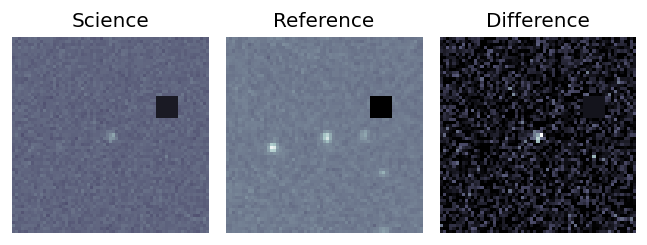
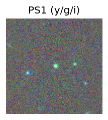
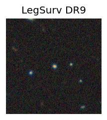
peak abs mag = -19.92 LegacySurvey: 1 sources in 3 arcsec Closest: d = 0.76 arcsec, 247.1 deg (east of north) photoz=0.25 (68% bounds 0.19, 0.29), type=REX peak abs mag = -20.25 (68% bounds -19.62, -20.61) 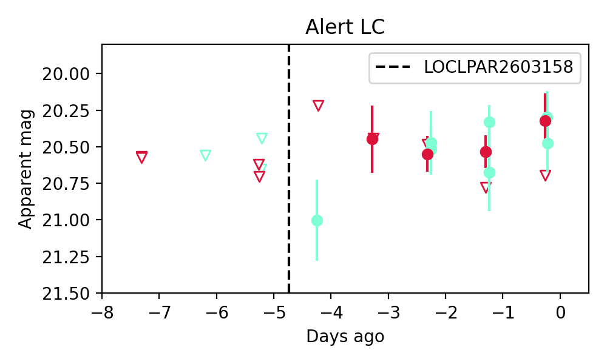
Consistent with synchrotron, g-r>0!
26. ZTF26aanfqhc (Afterglow?) [Back to Top] [Share] [Trigger Swift] [Fritz ] [Lasair ]RA, Dec: 236.66946, 12.14797 15h46m40.67s, 12d 8m52.69sGalactic (l, b): 21.69954, 46.37118 ext(g-r) = 0.062peak abs mag = -17.64 LegacySurvey: 1 sources in 3 arcsec Closest: d = 5.80 arcsec, 318.3 deg (east of north) photoz=0.03 (68% bounds 0.03, 0.04), type=SER peak abs mag = -16.71 (68% bounds -16.33, -17.2) Consistent with synchrotron, g-r>0!
27. ZTF26aanhglv (Afterglow?) [Back to Top] [Share] [Trigger Swift] [Fritz ] [Lasair ]RA, Dec: 253.46604, 64.16408 16h53m51.85s, 64d 9m50.69sGalactic (l, b): 94.57513, 36.92477 ext(g-r) = 0.032peak abs mag = -18.96 LegacySurvey: 1 sources in 3 arcsec Closest: d = 0.51 arcsec, 261.0 deg (east of north) photoz=0.09 (68% bounds 0.07, 0.12), type=SER peak abs mag = -18.29 (68% bounds -17.75, -18.81) Consistent with synchrotron, g-r>0!
28. ZTF26aanjcfy (FBOT?) [Back to Top] [Share] [Trigger Swift] [Fritz ] [Lasair ]RA, Dec: 132.10848, 7.31444 8h48m26.03s, 7d18m51.99sGalactic (l, b): 220.0243, 29.29907 ext(g-r) = 0.054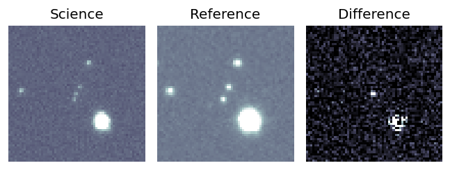
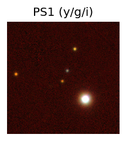
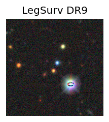
LegacySurvey: 1 sources in 3 arcsec Closest: d = 2.68 arcsec, 161.9 deg (east of north) photoz=0.14 (68% bounds 0.06, 0.27), type=PSF peak abs mag = -19.87 (68% bounds -17.87, -21.51) 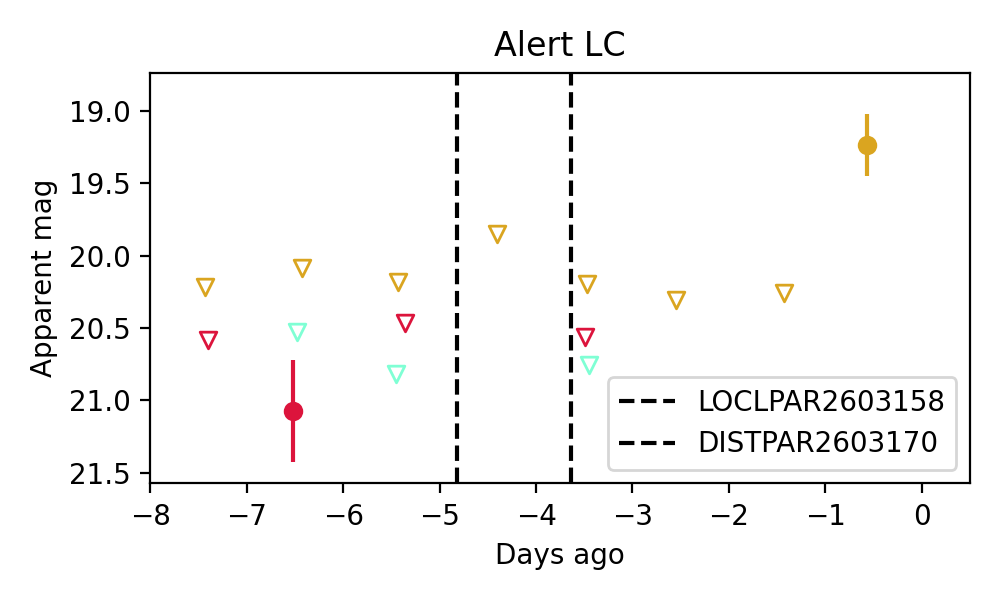
29. ZTF26aanjuht (FBOT?) [Back to Top] [Share] [Trigger Swift] [Fritz ] [Lasair ]RA, Dec: 102.54961, 16.38243 6h50m11.91s, 16d22m56.74sGalactic (l, b): 198.1373, 7.1225 ext(g-r) = 0.157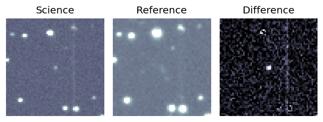
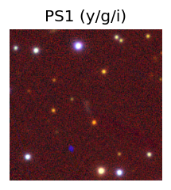
PS1: 1 source in 3 arcsec Closest: d = 0.14 arcsec photoz=0.29+/-0.14 peak abs mag = -21.35 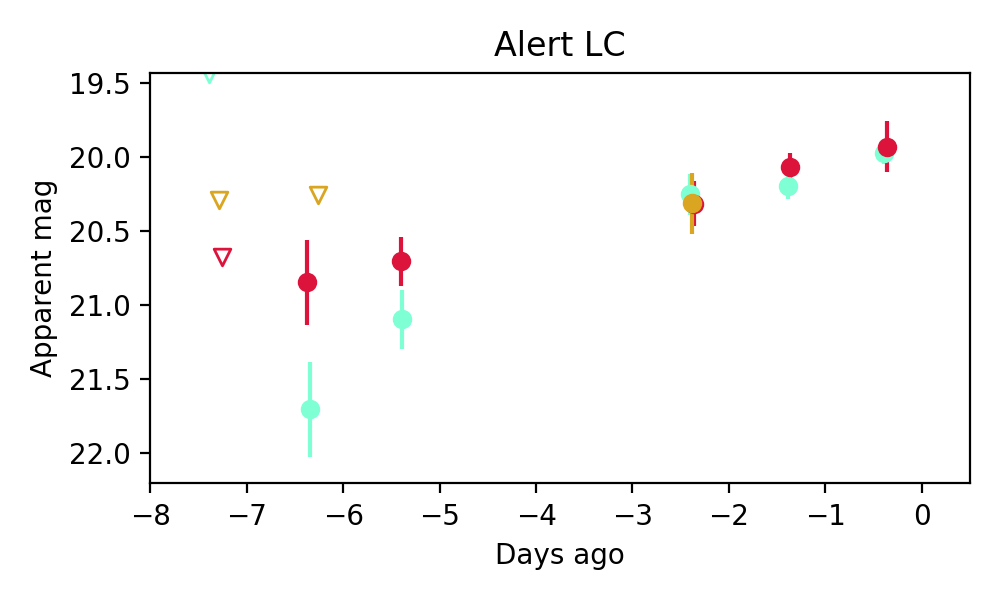
Consistent with synchrotron, g-r>0!
30. ZTF26aanjwhy (FBOT?) [Back to Top] [Share] [Trigger Swift] [Fritz ] [Lasair ]RA, Dec: 83.90379, 45.13164 5h35m36.91s, 45d 7m53.90sGalactic (l, b): 165.15467, 6.84675 ext(g-r) = 0.393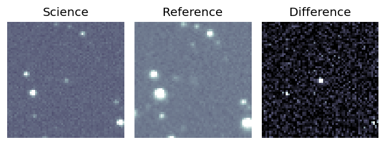
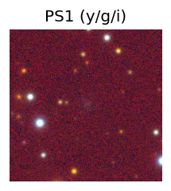
PS1: 1 source in 3 arcsec Closest: d = 0.59 arcsec photoz=0.13+/-0.13 peak abs mag = -20.23 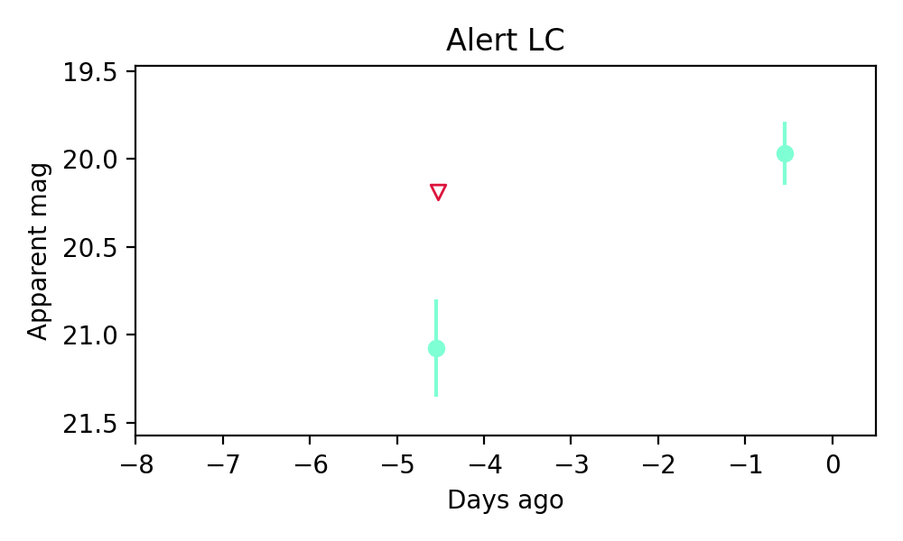
31. ZTF26aanlexu (Afterglow?) [Back to Top] [Share] [Trigger Swift] [Fritz ] [Lasair ]RA, Dec: 110.52427, 58.05206 7h22m5.83s, 58d 3m7.42sGalactic (l, b): 158.88683, 26.72622 ext(g-r) = 0.06LegacySurvey: 1 sources in 3 arcsec Closest: d = 2.85 arcsec, 273.0 deg (east of north) photoz=0.01 (68% bounds 0.01, 0.06), type=PSF peak abs mag = -16.47 (68% bounds -15.35, -19.65) Consistent with synchrotron, g-r>0!
32. ZTF26aanlist (Afterglow?) [Back to Top] [Share] [Trigger Swift] [Fritz ] [Lasair ]RA, Dec: 130.40265, 41.24764 8h41m36.64s, 41d14m51.49sGalactic (l, b): 180.21583, 37.59416 ext(g-r) = 0.036LegacySurvey: 1 sources in 3 arcsec Closest: d = 4.85 arcsec, 341.5 deg (east of north) photoz=0.03 (68% bounds 0.01, 0.13), type=EXP peak abs mag = -15.87 (68% bounds -13.43, -19.09) Consistent with synchrotron, g-r>0!
33. ZTF26aanlpkr (FBOT?) [Back to Top] [Share] [Trigger Swift] [Fritz ] [Lasair ]RA, Dec: 129.01364, 28.70979 8h36m3.27s, 28d42m35.25sGalactic (l, b): 195.23219, 34.27124 ext(g-r) = 0.048peak abs mag = -19.68 LegacySurvey: 1 sources in 3 arcsec Closest: d = 0.28 arcsec, 236.7 deg (east of north) photoz=0.11 (68% bounds 0.09, 0.15), type=SER peak abs mag = -18.84 (68% bounds -18.24, -19.44) Consistent with synchrotron, g-r>0!
34. ZTF26aanmabz (FBOT?) [Back to Top] [Share] [Trigger Swift] [Fritz ] [Lasair ]RA, Dec: 147.9139, 60.75122 9h51m39.34s, 60d45m4.38sGalactic (l, b): 152.08344, 44.88018 ext(g-r) = 0.025peak abs mag = -21.68 LegacySurvey: 1 sources in 3 arcsec Closest: d = 0.63 arcsec, 318.2 deg (east of north) photoz=0.13 (68% bounds 0.09, 0.17), type=REX peak abs mag = -18.71 (68% bounds -17.94, -19.4) Consistent with synchrotron, g-r>0!
35. ZTF26aanncqg (Afterglow?) [Back to Top] [Share] [Trigger Swift] [Fritz ] [Lasair ]RA, Dec: 134.82609, 21.80274 8h59m18.26s, 21d48m9.87sGalactic (l, b): 205.23805, 37.36103 WARNING: 4.52 deg from ecliptic plane ext(g-r) = 0.033peak abs mag = -18.71 LegacySurvey: 1 sources in 3 arcsec Closest: d = 3.21 arcsec, 348.2 deg (east of north) photoz=0.09 (68% bounds 0.09, 0.1), type=SER peak abs mag = -18.75 (68% bounds -18.61, -18.9) Consistent with synchrotron, g-r>0!
36. ZTF26aanogok (FBOT?) [Back to Top] [Share] [Trigger Swift] [Fritz ] [Lasair ]RA, Dec: 153.40481, 24.03326 10h13m37.15s, 24d 1m59.73sGalactic (l, b): 208.90021, 54.42147 ext(g-r) = 0.023peak abs mag = -20.85 LegacySurvey: 1 sources in 3 arcsec Closest: d = 1.93 arcsec, 346.5 deg (east of north) photoz=0.88 (68% bounds 0.81, 0.97), type=PSF peak abs mag = -24.6 (68% bounds -24.36, -24.85)
37. ZTF26aanolsh (FBOT?) [Back to Top] [Share] [Trigger Swift] [Fritz ] [Lasair ]RA, Dec: 152.42341, 9.20651 10h 9m41.62s, 9d12m23.44sGalactic (l, b): 230.29604, 47.87003 WARNING: -2.0 deg from ecliptic plane ext(g-r) = 0.038LegacySurvey: 1 sources in 3 arcsec Closest: d = 0.40 arcsec, 213.9 deg (east of north) photoz=0.49 (68% bounds 0.39, 0.62), type=PSF peak abs mag = -22.36 (68% bounds -21.8, -23.02)
38. ZTF26aanomtu (Afterglow?) [Back to Top] [Share] [Trigger Swift] [Fritz ] [Lasair ]RA, Dec: 145.8175, 16.93101 9h43m16.20s, 16d55m51.63sGalactic (l, b): 216.04557, 45.4793 WARNING: 3.06 deg from ecliptic plane ext(g-r) = 0.03LegacySurvey: 1 sources in 3 arcsec Closest: d = 2.69 arcsec, 342.9 deg (east of north) photoz=0.91 (68% bounds 0.84, 0.99), type=REX peak abs mag = -25.03 (68% bounds -24.83, -25.26)
39. ZTF26aanooex (Afterglow?) [Back to Top] [Share] [Trigger Swift] [Fritz ] [Lasair ]RA, Dec: 143.6915, 18.84441 9h34m45.96s, 18d50m39.89sGalactic (l, b): 212.50753, 44.26712 WARNING: 4.21 deg from ecliptic plane ext(g-r) = 0.031LegacySurvey: 1 sources in 3 arcsec Closest: d = 4.24 arcsec, 142.9 deg (east of north) photoz=0.99 (68% bounds 0.89, 1.14), type=REX peak abs mag = -25.31 (68% bounds -25.01, -25.68)
40. ZTF26aanoubt (FBOT?) [Back to Top] [Share] [Trigger Swift] [Fritz ] [Lasair ]RA, Dec: 166.55285, 14.49014 11h 6m12.68s, 14d29m24.50sGalactic (l, b): 234.89885, 62.44063 ext(g-r) = 0.015peak abs mag = -23.06 LegacySurvey: 1 sources in 3 arcsec Closest: d = 1.67 arcsec, 77.8 deg (east of north) photoz=0.43 (68% bounds 0.39, 0.48), type=REX peak abs mag = -23.28 (68% bounds -23.02, -23.54)
41. ZTF26aanowth (FBOT?) [Back to Top] [Share] [Trigger Swift] [Fritz ] [Lasair ]RA, Dec: 168.85385, -15.41347 11h15m24.92s, -15d-24m-48.51sGalactic (l, b): 271.3561, 41.49654 ext(g-r) = 0.055peak abs mag = -19.60 PS1: 1 source in 3 arcsec Closest: d = 2.71 arcsec photoz=0.11+/-0.05 peak abs mag = -18.92 Consistent with synchrotron, g-r>0!
42. ZTF26aanrbzi (Afterglow?) [Back to Top] [Share] [Trigger Swift] [Fritz ] [Lasair ]RA, Dec: 186.37065, 61.16829 12h25m28.96s, 61d10m5.83sGalactic (l, b): 128.47865, 55.67956 ext(g-r) = 0.018peak abs mag = -18.65 LegacySurvey: 1 sources in 3 arcsec Closest: d = 1.82 arcsec, 205.6 deg (east of north) photoz=0.14 (68% bounds 0.11, 0.15), type=SER peak abs mag = -18.74 (68% bounds -18.26, -19.04)
43. ZTF26aanrxbe (FBOT?) [Back to Top] [Share] [Trigger Swift] [Fritz ] [Lasair ]RA, Dec: 175.71114, 46.39796 11h42m50.67s, 46d23m52.67sGalactic (l, b): 153.51975, 66.44687 ext(g-r) = 0.026peak abs mag = -19.83 LegacySurvey: 1 sources in 3 arcsec Closest: d = 0.78 arcsec, 274.4 deg (east of north) photoz=0.2 (68% bounds 0.16, 0.22), type=REX peak abs mag = -19.61 (68% bounds -19.16, -19.92)
44. ZTF26aanscix (Afterglow?) [Back to Top] [Share] [Trigger Swift] [Fritz ] [Lasair ]RA, Dec: 181.93742, -2.13552 12h 7m44.98s, -2d-8m-7.86sGalactic (l, b): 281.42803, 58.90014 WARNING: -1.19 deg from ecliptic plane ext(g-r) = 0.027LegacySurvey: 1 sources in 3 arcsec Closest: d = 1.53 arcsec, 18.9 deg (east of north) photoz=0.79 (68% bounds 0.5, 1.08), type=PSF peak abs mag = -23.95 (68% bounds -22.73, -24.79) Consistent with synchrotron, g-r>0!
45. ZTF26aansgjw (Afterglow?) [Back to Top] [Share] [Trigger Swift] [Fritz ] [Lasair ]RA, Dec: 186.82117, 4.072 12h27m17.08s, 4d 4m19.21sGalactic (l, b): 287.84049, 66.2335 ext(g-r) = 0.019LegacySurvey: 1 sources in 3 arcsec Closest: d = 7.97 arcsec, 122.9 deg (east of north) photoz=0.93 (68% bounds 0.55, 1.51), type=PSF peak abs mag = -23.95 (68% bounds -22.59, -25.26)
46. ZTF26aansrmt (FBOT?) [Back to Top] [Share] [Trigger Swift] [Fritz ] [Lasair ]RA, Dec: 217.13258, 48.54996 14h28m31.82s, 48d32m59.86sGalactic (l, b): 88.15772, 61.50217 ext(g-r) = 0.02peak abs mag = -19.30 LegacySurvey: 1 sources in 3 arcsec Closest: d = 0.92 arcsec, 207.8 deg (east of north) photoz=0.19 (68% bounds 0.15, 0.23), type=SER peak abs mag = -19.5 (68% bounds -18.92, -19.99)
47. ZTF26aantoaf (Afterglow?) [Back to Top] [Share] [Trigger Swift] [Fritz ] [Lasair ]RA, Dec: 271.5055, 81.4235 18h 6m1.32s, 81d25m24.61sGalactic (l, b): 113.3558, 28.49057 ext(g-r) = 0.074LegacySurvey: 1 sources in 3 arcsec Closest: d = 8.20 arcsec, 244.7 deg (east of north) photoz=0.45 (68% bounds 0.39, 0.56), type=PSF peak abs mag = -22.73 (68% bounds -22.33, -23.29)
48. ZTF26aanufuz (Afterglow?) [Back to Top] [Share] [Trigger Swift] [Fritz ] [Lasair ]RA, Dec: 324.35264, 13.16846 21h37m24.63s, 13d10m6.45sGalactic (l, b): 67.19926, -28.05114 ext(g-r) = 0.171LegacySurvey: 1 sources in 3 arcsec Closest: d = 6.72 arcsec, 156.1 deg (east of north) photoz=0.01 (68% bounds 0.01, 0.04), type=PSF peak abs mag = -15.3 (68% bounds -13.76, -17.68)